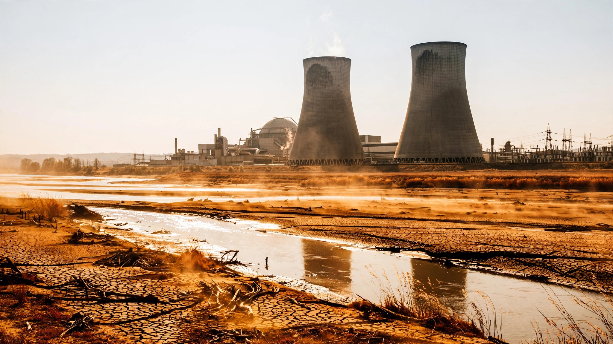

⚡ Energy
France Built 57 Nuclear Reactors to Fight Climate Change. This Summer, Heat Shut Down 14% of Their Output. Three Times.
July 2026 was the hottest month ever recorded in France. It knocked 8.8 GW of nuclear capacity offline because rivers got too warm for cooling. The replacement power came from gas. We calculated the CO2 cost of the feedback loop.

On July 13, 2026, data published by the French utility EDF showed that 6.3 gigawatts of nuclear generation had been curtailed or taken fully offline across eight reactors, a loss that at 07:30 GMT equaled 14% of total French power demand, because the rivers that cool these plants had grown too warm to accept their waste heat without breaching environmental law. Golfech 2 on the Garonne went dark, and Bugey 3 on the Rhône went dark alongside it, while Saint Alban 1 and 2, Bugey 4 and 5, and Blayais 1 and 3 ran at reduced capacity, their operators throttling output not because anything mechanical had broken but because the water flowing past their intakes had crossed a temperature threshold set to protect fish, frogs, and the dissolved oxygen that keeps river ecosystems alive.
It was the third time that summer that heat had forced France's nuclear fleet to stand down, and it would not be the last time the grid felt the consequences of a fleet designed for twentieth-century rivers operating in a twenty-first-century climate.
France operates 57 nuclear reactors that collectively generate roughly 70% of the country's electricity, a share that makes it the most nuclear-dependent nation on Earth and the most visible proof of concept for what happens when a wealthy, industrialized democracy bets its energy system on fission after the oil crises of the 1970s convinced Paris that sovereignty required a fuel source that did not arrive on tankers from the Persian Gulf. Uranium fit that brief, the reactors were built between the 1970s and 1990s along the major river systems of the Rhône, the Loire, the Garonne, the Seine, the Moselle, and the Meuse, and the system worked so well that France became Europe's largest electricity exporter, selling cheap baseload power to neighbors whose grids ran on costlier and dirtier alternatives while emitting a fraction of Germany's CO2 per kilowatt-hour.
But 44 of those 57 reactors draw river water for cooling, and under a 2006 government decree, EDF must curtail output when downstream temperatures exceed specific limits, typically 28°C for the Garonne at Golfech, because returning heated cooling water to an already warm river can deplete dissolved oxygen levels to the point where fish populations collapse and aquatic ecosystems die. The regulation protects the river. It does not protect the grid.
Three Waves in One Summer
The summer of 2026 brought three distinct heatwave events that each forced nuclear curtailments of increasing severity, revealing that the problem was not a single weather anomaly but a pattern that returned faster than grid planners had modeled, faster than EDF had budgeted for, and faster than the French public had been told to expect.
The first wave struck in late June, and on June 24, Reuters reported 4.1 GW offline at midday, which translated to 7% of total demand lost to heat at the precise moment when temperatures exceeded 40°C in parts of the country and wholesale electricity spot prices in both France and Germany surged to their highest level since mid-January 2025. French electricity exports, normally running between 10 and 12 GW flowing to neighboring grids, collapsed to just 3 GW in a single afternoon as the reactors that generated those exports throttled back to keep the Garonne and Rhône below their legal temperature limits.
The second wave arrived barely two weeks later, peaking on July 13 at 6.3 GW curtailed from heat alone, while an additional 2.5 GW sat idle at the Chooz plant near the Belgian border because the Meuse River, subject to a water-sharing agreement between the two countries, had dropped so low that its remaining flow could not safely absorb the thermal discharge from even one of the plant's reactors. Total unavailable nuclear capacity that day reached 8.8 GW, roughly 14% of France's installed nuclear base, gone not to maintenance or mechanical failure but to warm water and low rivers.
Then the third wave pushed the crisis beyond the nuclear fleet entirely, because on July 16, EDF issued a production restriction notice for the 930 MW Martigues gas plant on the Mediterranean coast after sea surface temperatures exceeded the facility's own cooling water limits, marking the first gas-fired heat shutdown in France since 2022 and demonstrating that the thermal vulnerability extended across fuel types, cooling technologies, and geographies.
"We have seen two waves of climate-related unavailabilities that were unprecedented in both severity and timing, involving reactors that are not normally affected," said Thibault Laconde, founder of climate data analytics company Callendar, in comments to Reuters that deserve careful parsing, because the phrase "reactors that are not normally affected" means the thermal frontier is advancing through the fleet faster than anyone modeled, reaching plants that EDF's own planners had treated as safely outside the risk zone.
The Record That Broke the Records
Météo-France released its official climate report for July on August 4, and the numbers reported by Le Monde placed the month in historical territory that most climate scientists would have expected to see later in the decade, if not later in the century: July 2026 averaged 24.9°C across mainland France, surpassing August 2003 by a full tenth of a degree to become the hottest month ever recorded in the country, while rainfall fell 70% below normal, making it the third-driest July since systematic measurement began in 1959, and sunshine exceeded the average by 35%, a triad of heat, drought, and radiation that compounded every thermal stress the nuclear fleet was designed to withstand.
The old temperature record had stood for twenty-three years, and France just shattered it in a different calendar month.
The Feedback Loop Nobody Published
When a nuclear reactor goes offline, the electrons still need to come from somewhere, and in France the marginal replacement is typically gas-fired generation, a fuel source that emits approximately 400 grams of CO2 per kilowatt-hour compared to nuclear's roughly 12 grams over the full lifecycle, creating a thirty-three-fold difference in carbon intensity that transforms every curtailment event into a measurable emissions spike whose effects compound across subsequent summers as the additional CO2 contributes to the warming that caused the curtailment in the first place.
Here is the arithmetic nobody has assembled from end to end, connecting curtailed megawatts to replacement gas dispatch to incremental CO2 in a single calculation chain. If half of the curtailed nuclear output across the three summer events was replaced by gas (with the remainder absorbed by reduced exports, renewable generation, and demand response), the daily CO2 penalty during peak curtailment runs to 4,400 MW × 24 hours × 0.4 tonnes CO2/MWh = 42,240 tonnes of CO2 per day, and across the roughly 30 days of significant curtailment that summer 2026 inflicted on the fleet, that yields approximately 1.2 to 1.5 million tonnes of additional CO2 attributable directly to the thermal limits of the nuclear fleet.
France's total annual CO2 emissions run at roughly 300 million tonnes, which means the summer curtailments likely added about 0.4% to 0.5% to the national ledger, a fraction that sounds negligible until you trace its causal chain: heat waves warmed rivers, which shut down nuclear, which dispatched gas, which emitted CO2, which compounds the warming that created the heat waves. That is not an abstract feedback loop described in a climate model. It is one that is now measurable in tonnes per summer, and it will grow as rivers warm, as curtailment windows lengthen, and as each decade delivers more days above the 28°C threshold that triggers the shutdowns.
The Export Revenue That Evaporated
France normally exports 10 to 12 GW of cheap nuclear electricity to neighboring countries, earning billions of euros annually while suppressing wholesale power prices across the continent, a role that benefits European consumers and industrial competitiveness alike and that depends entirely on the French fleet running at high capacity during the very summer months when neighbors need air conditioning, refrigeration, and reliable power for their own strained grids. During the first heatwave event, exports dropped from their normal range to approximately 3 GW, a collapse of 7 to 9 GW that coincided with surging demand and spiking prices across southern and central Europe.
Conservative arithmetic: 7,000 MW of lost exports × 24 hours × €90/MWh at the elevated spot prices prevailing during the heatwave = €15.1 million per day in lost export revenue, and over three events totaling roughly 30 days of significant curtailment, France's nuclear fleet may have forfeited approximately €450 million in export earnings to heat alone, a sum that flowed instead to gas generators in Germany, Spain, and Italy whose plants kept running because they either sat on the coast, used air-cooled systems, or simply had rivers that had not yet crossed their own thermal thresholds.
Kpler analyst Alessandro Armenia summarized the new reality with a symmetry that would have seemed implausible a decade ago: "Climate change is demonstrating how extreme heat can be as disruptive as the cold-weather price spikes we see in winter."
The Accelerating Calendar
Perhaps the most troubling calculation requires no modeling assumptions or marginal dispatch estimates, only a timeline and a ruler. Major nuclear heat curtailments in France have been documented in 2003, 2018, 2022, 2023, and now 2026, where they occurred three times in a single summer, and the gap between significant events tells a story of collapsing intervals that mirrors the acceleration of European heatwave frequency documented by the World Meteorological Organization: fifteen years from 2003 to 2018, then four years to 2022, then one year to 2023, then three years to 2026 with a triple occurrence that compressed what had been a decadal risk into a seasonal certainty.
European river temperatures have been warming at approximately 0.3 to 0.7°C per decade since the 1980s, according to research published in the journal Climatic Change, and the Rhône has warmed roughly 1.5°C since 1970 based on monitoring data from France's national hydrological service. The Golfech regulatory threshold sits at a downstream daily average of 28°C on the Garonne, and if the Garonne warms by another 0.5°C over the next decade, as current trajectories suggest it will, the number of days per year exceeding that threshold roughly doubles based on the observed temperature distribution at Golfech between 2010 and 2025, a projection that transforms summer nuclear curtailments from emergency events requiring crisis management into seasonal features to be planned around, as predictable as demand spikes from air conditioning and as structurally costly as any scheduled maintenance outage.
What Other Countries Build Instead
France's problem is not nuclear energy per se but rather river-cooled nuclear energy sited along waterways whose thermal profiles are diverging from the conditions under which the plants were designed and permitted, a distinction that matters enormously because the engineering alternatives are well understood even if the political and financial will to deploy them across an aging fleet remains uncertain.
Coastal reactors using seawater for cooling, such as those at Gravelines on the English Channel (France's largest plant, with six units) and most of the UK fleet, face far less thermal risk because the ocean's thermal mass is orders of magnitude larger than a river's, a buffer that delays and dampens surface temperature spikes in ways that riverine systems simply cannot replicate. Gravelines was not curtailed this summer. The new generation of small modular reactors that hit criticality in the U.S. DOE's Reactor Pilot Program this summer use passive or dry cooling systems that do not depend on river water at all, accepting a modest thermal efficiency penalty of roughly four percentage points (33% versus 37%) in exchange for complete independence from hydrological conditions, a trade-off that looks trivial when the alternative is shutting down entirely during peak summer demand.
France itself is already adapting, though the pace of adaptation lags the pace of warming. EDF has invested in upgraded cooling towers at several inland plants and has sought temporary regulatory exemptions, successfully obtaining one for Bugey that extended its operating window until July 20 before environmental limits forced a shutdown, but retrofitting cooling infrastructure across 44 river-cooled reactors is a multi-billion-euro project that competes for capital against EDF's plans to build new EPR2 reactors, develop the Nuward small modular reactor program, and service the utility's substantial existing debt.
Limitations
Our CO2 replacement calculation assumes that roughly half of curtailed nuclear output was replaced by gas generation, with the remainder absorbed by reduced exports, increased renewable dispatch, and demand response, but actual gas dispatch varies hour by hour and depends on interconnection flows, real-time wind and solar availability, pumped hydro storage levels, and the bidding behavior of generators across multiple European markets. The true emissions figure could be lower if neighbors supplied more hydro or wind during the curtailment windows, or meaningfully higher if gas dominated the replacement mix during evening hours when solar drops off.
River warming projections carry uncertainty in both direction and magnitude because individual rivers respond differently to atmospheric warming depending on discharge volume, depth, riparian shading, upstream reservoir management, and groundwater contributions, and the Rhône's 1.5°C warming since 1970 is well-documented by long-term hydrological monitoring but may not be representative of the Garonne or Loire, whose different hydrological profiles could produce either faster or slower warming in the decades ahead.
The Strongest Case Against This Argument
Nuclear curtailments remain manageable by every operational measure that matters right now. France continued to export power every single day of the summer, the grid never approached rolling blackouts, and RTE, the national transmission system operator, consistently stated that supply security was not at risk, even during the peak 8.8 GW curtailment event. Total curtailed energy across the entire summer represents a modest fraction of France's annual nuclear output of roughly 350 TWh, and the fleet still generated more low-carbon electricity in a single year than Spain's entire renewable portfolio produces, curtailments and all, a reminder that French nuclear's net contribution to European decarbonization remains overwhelmingly positive even during its most thermally stressed season on record.
That argument is entirely valid today, and it becomes a tenth of a degree less valid with every passing summer.
What You Can Do
If you work in energy policy or grid planning, model nuclear thermal limits as a climate-dependent variable rather than a fixed design parameter, because current long-term resource adequacy models across Europe treat nuclear availability as a function of maintenance schedules and component reliability but rarely incorporate river temperature projections, an omission that may understate summer capacity risk by several gigawatts within the next decade and that could leave grid operators scrambling during exactly the conditions when reliability matters most. If you invest in nuclear, favor coastal, dry-cooled, and closed-loop designs over inland river-cooled configurations, because the engineering efficiency penalty is modest and the climate resilience advantage grows larger with every degree of warming. If you live in France or trade on a European electricity exchange, start watching Rhône and Garonne river temperature forecasts with the same intensity you bring to wind speed and solar irradiance data, because those rivers now predict your electricity prices more reliably than any demand model built before 2020.
The Bottom Line
France's nuclear fleet is the world's most successful proof of concept for decarbonized baseload power, and it is simultaneously becoming the world's clearest demonstration of the thermodynamic trap, the phenomenon where infrastructure built specifically to prevent warming stops working precisely because warming has arrived. The 57 reactors are not failing because of engineering defects, safety lapses, or political neglect. They are failing because European rivers in 2026 carry water that runs 1 to 2 degrees warmer than the water that flowed through these same channels when the plants were designed in the 1970s, and because the regulatory thresholds set to protect aquatic life have not moved while the baseline river temperatures have moved past them. The feedback loop, nuclear offline forces gas online forces CO2 higher forces rivers warmer forces more nuclear offline, added roughly 1.2 to 1.5 million tonnes of CO2 to France's emissions ledger in a single season. Next summer, the rivers will be warmer still.